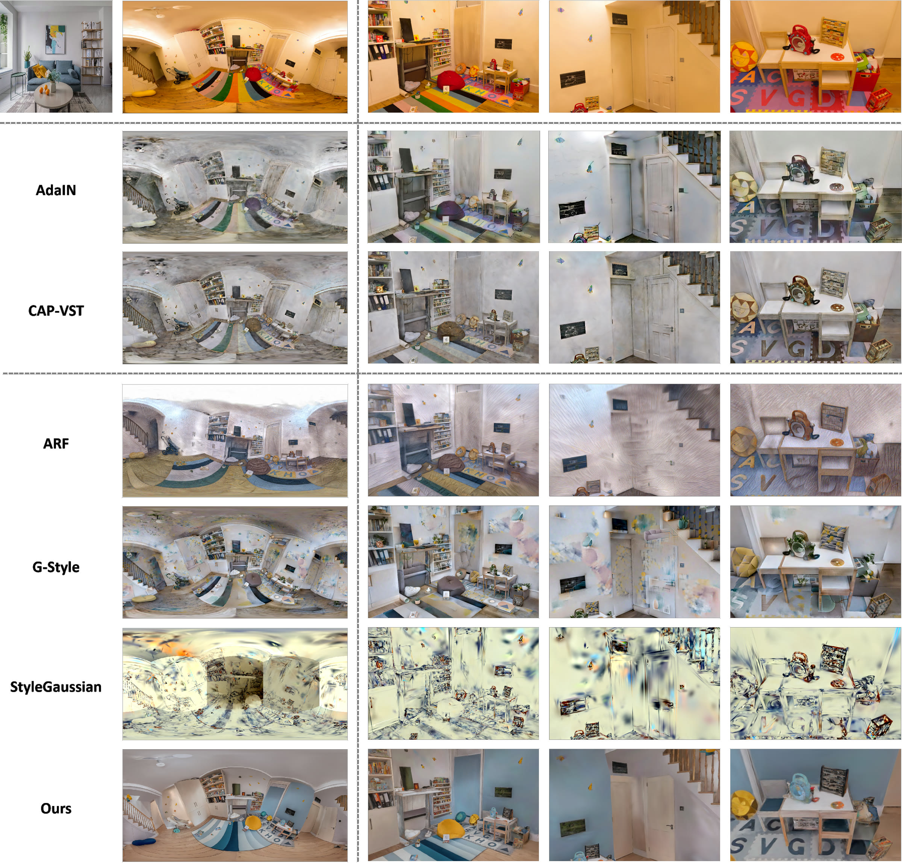
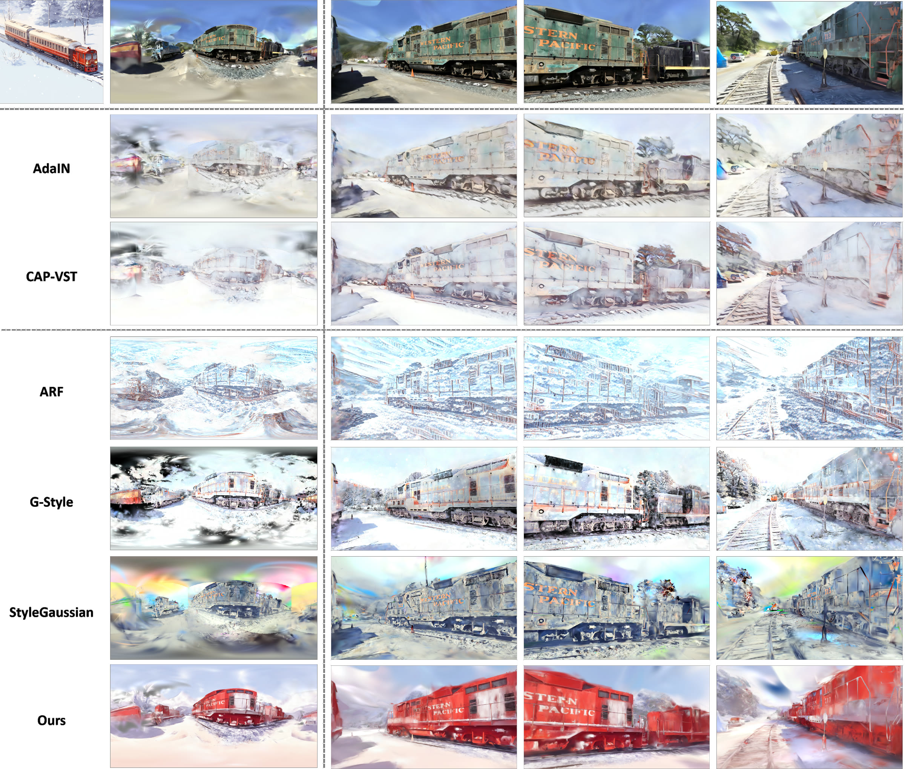
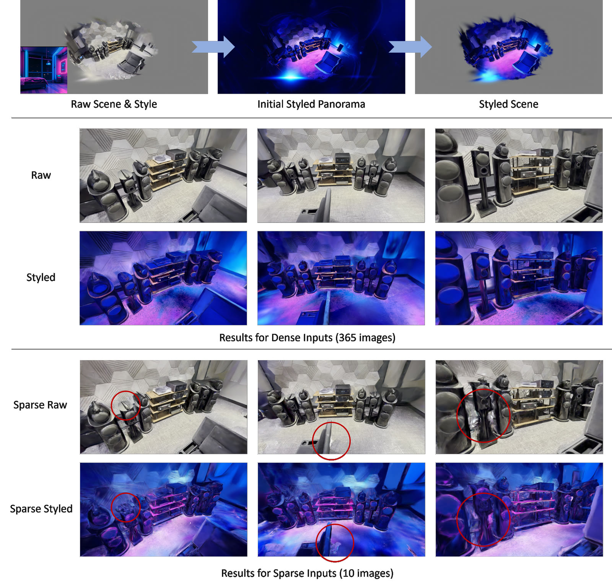
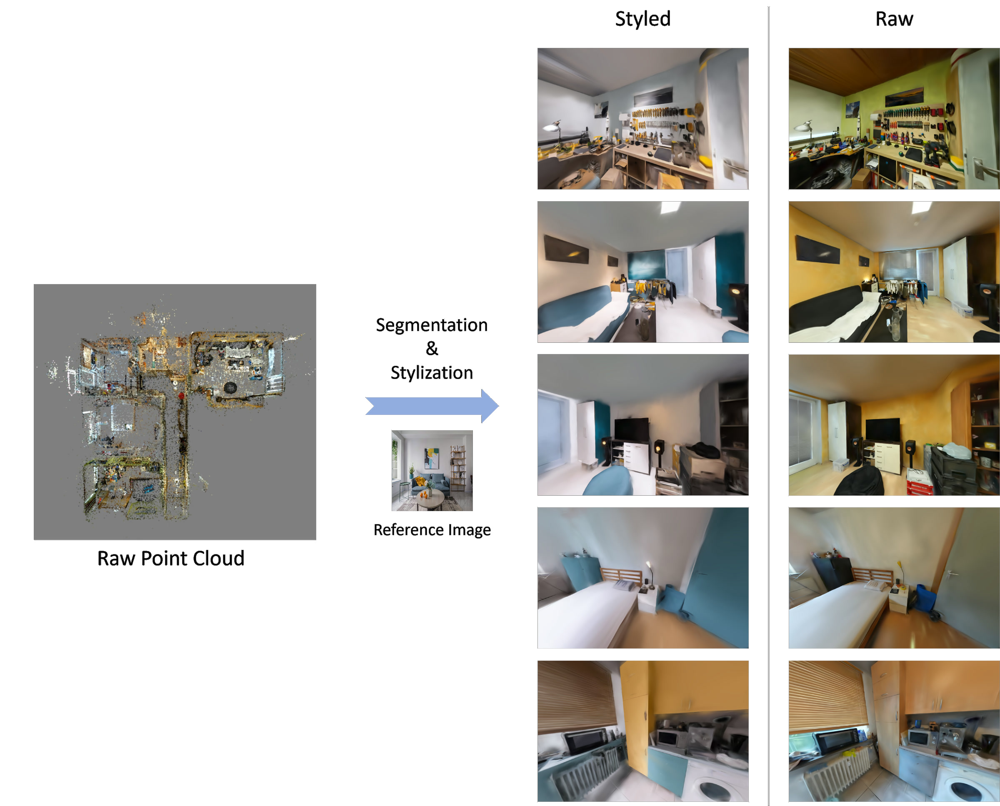
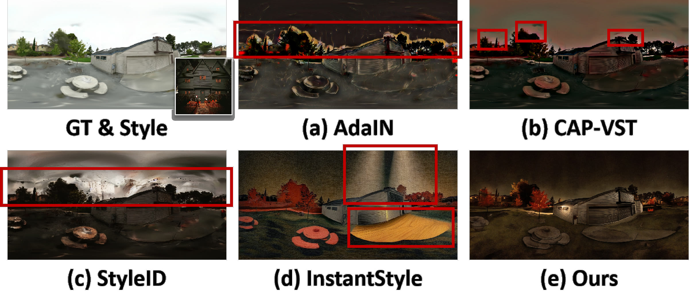
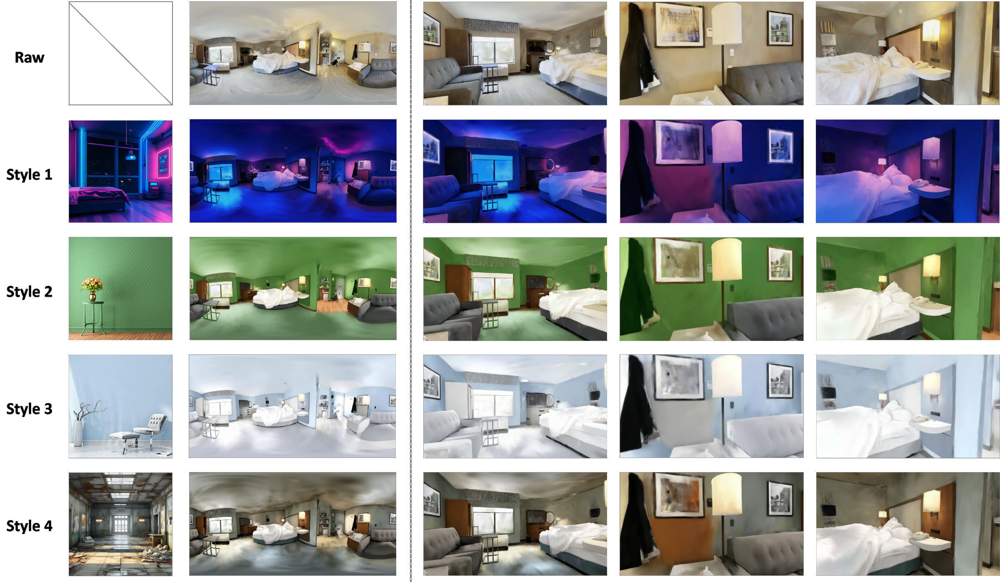

3D scene stylization offers enhanced immersion and visual coherence for 3D experiences in digital content creation and augmented reality applications. Existing approaches frequently struggle to balance style consistency across different viewpoints, geometry consistency as reference, and zero-shot generalization to unseen styles.
To overcome these problems, we present PanoGS, a panorama-based 3D scene stylization framework incorporating two innovative designs: Circular Consistent Stylization and Progressive Propagation Refinement. Circular Consistent Stylization imposes style priors, geometric structure, and circular denoising on a Stable Diffusion-based stylization, ensuring both faithful style transfer from reference images and preservation of original scene geometry with seamless circular continuity. Progressive Propagation Refinement extends single-viewpoint panorama stylization to multi-viewpoint panoramas through color propagation and novel-view refinement, effectively addressing the stylization of occluded regions under sparse viewpoints.
Experiments demonstrate that PanoGS outperforms existing methods in quantitative metrics, with an average improvement of 9.23% on CLIP and 29.43% and 28.58% on short-range LPIPS and RMSE. Furthermore, user studies indicate strong preference rates for our method regarding geometric (75.00%), stylistic (66.37%), and semantic consistency (74.11%). Overall, our approach achieves high-quality 3D stylization with superior style consistency and geometric alignment to input in a zero-shot manner.

Qualitative comparisons on the Playroom scene (DeepBlending). The first column shows the panoramic view result, while the other columns show results in three perspective views. PanoGS achieves harmonized stylization across the entire scene with clean, artifact-free results, while existing methods suffer from unnatural line textures, color contamination, and noisy floaters.

Qualitative results on the Train scene (Tanks and Temples). PanoGS successfully stylizes the train in red as in the reference image, while the compared methods produce mismatched colors. PanoGS also preserves clear text textures and window structures on the train.
Robustness to sparse inputs. Even when the scene is reconstructed from only 10 sparse input images, the stylization pipeline maintains perceptual consistency across observed regions without structural degradation.

Robustness under sparse input views. The top row displays the raw scene, reference style, initial styled panorama, and styled scene. The middle row shows perspective views under dense inputs (369 images), and the bottom row under sparse inputs (10 images); the red circle indicates artifacts.
Large-scale multi-room scenes. With a room-wise partition strategy that divides the scene into local regions and stylizes each region independently with overlapping references, PanoGS scales to large multi-room spaces with smooth transitions across room boundaries.

Stylization results on a large-scale multi-room scene. The top row shows the raw scene captured from multiple rooms, and the bottom row presents the stylized results.

Comparison on panorama stylization with (a) AdaIN, (b) CAP-VST, (c) StyleID, and (d) InstantStyle. PanoGS avoids geometric distortions, color bleeding, and noise artifacts.
PanoGS works in a zero-shot, training-free manner, so arbitrary reference styles can be applied to the same scene without any additional training. Region-wise style fusion is also supported by segmenting object regions within a panorama and applying different styles to designated regions, opening up vast possibilities for customized artistic creation.

Stylization results of the same scene with diverse reference styles.
@article{he2026panogs,
Author = {Yihong He and Haiyong Jiang and Yuxi Wang and Dongbo Yu and Jun Xiao},
Title = {PanoGS: Panorama-based 3D Scene Stylization with Style and Geometry Consistency},
Journal = {IEEE Transactions on Image Processing},
Year = {2026},
doi = {10.1109/TIP.2026.3731941},
note = {Early Access},
}